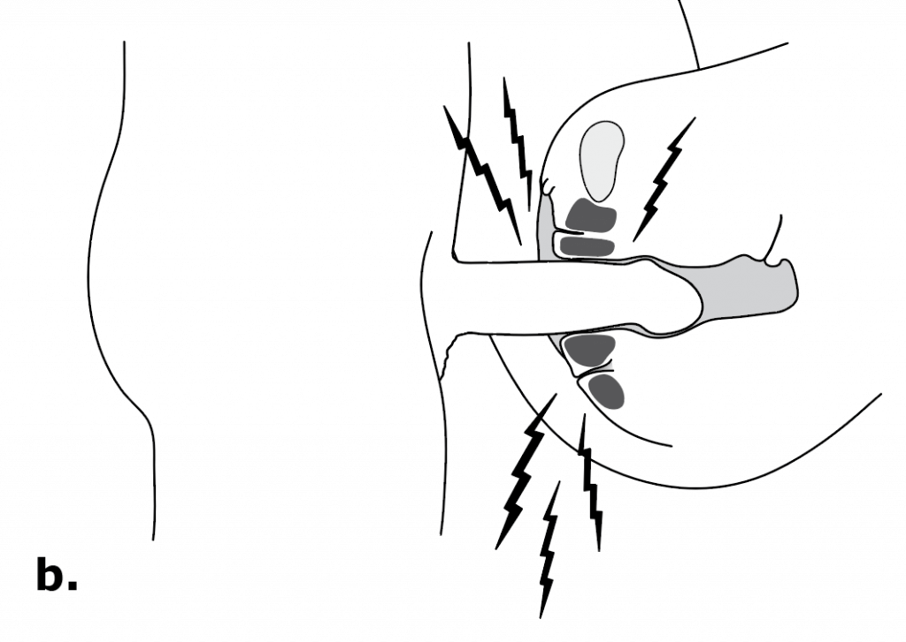
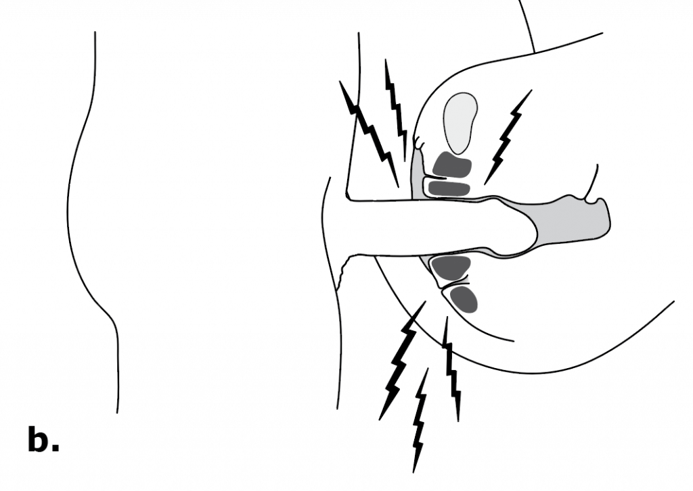

What is Vaginismus?
Vaginismus is vaginal tightness causing discomfort, burning, pain, penetration problems, or complete inability to have intercourse. Vaginismus is also known as genito-pelvic pain/penetration disorder (DSM‐V).
Vaginismus [vaj‐uh‐niz‐muh s]1
Vaginismus is a condition where there is involuntary tightness of the vagina during attempted intercourse. The tightness is actually caused by involuntary contractions of the pelvic floor muscles surrounding the vagina. The woman does not directly control or will the tightness to occur; it is an involuntary pelvic response. She may not even have any awareness that the muscle response is causing the tightness or penetration problem.
In some cases, vaginismus tightness may begin to cause burning, pain, or stinging during intercourse. In other cases, penetration may be difficult or completely impossible. Vaginismus is the main cause of unconsummated relationships. The tightness can be so restrictive that the opening to the vagina is “closed off” altogether and the man is unable to insert his penis. The pain of vaginismus ends when the sexual attempt stops, and, usually, intercourse must be halted due to pain or discomfort.

Vaginismus Involuntary Tightness
In the diagram on the left, the effects of vaginismus are illustrated with the tightening of the pelvic floor muscles and the resulting tightness of the vagina. On the right, the pelvic floor is relaxed and intercourse is possible without pain.
Types of Vaginismus
Primary Vaginismus – When a woman has never at any time been able to have pain-free intercourse due to the involuntary contractions of the pelvic floor muscles her condition is known as primary vaginismus. Some women with primary vaginismus are unable to wear tampons and/or complete pelvic exams. Many couples are unable to consummate their relationship due to primary vaginismus. (see Symptoms)
Secondary Vaginismus – Vaginismus can also develop later in life, even after many years of pleasurable intercourse. This type of condition, known as secondary vaginismus, is usually precipitated by a medical condition, traumatic event, childbirth, surgery, or life-change (menopause). (see Causes)
Did You Know?
Vaginismus is a common cause of ongoing sexual pain and is also the primary female cause of sexless (unconsummated) marriages. Sexual pain can affect women in all stages of life; even women who have had years of comfortable sex. While temporarily experiencing discomfort during sexual intercourse is not unusual, ongoing problems should be diagnosed and treated.
 

Examples of Vaginismus
In the vaginismus condition, as the man approaches the woman, her PC muscle group (darkly shaded) involuntarily tightens the vaginal entrance making intercourse painfully impossible or penetration may be successful but may result in burning, discomfort, and pain.
References
- vaginismus. (n.d.). Dictionary.com Unabridged (v 1.1). Retrieved February 19, 2007, from Dictionary.com website: http://dictionary.reference.com/browse/Vaginismus